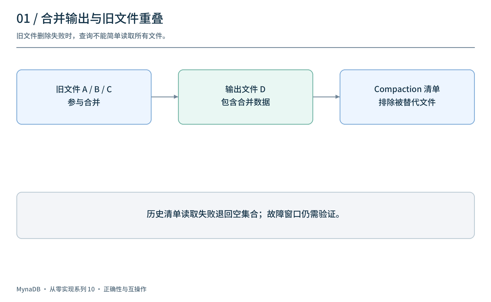
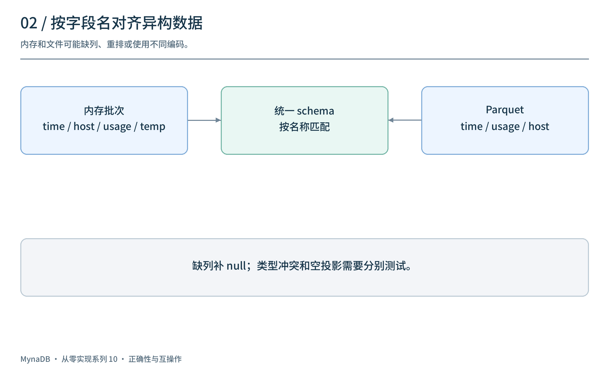
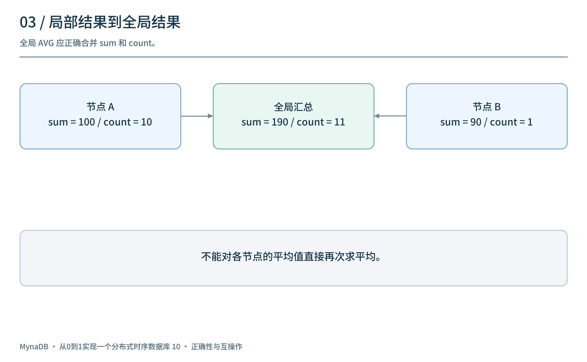
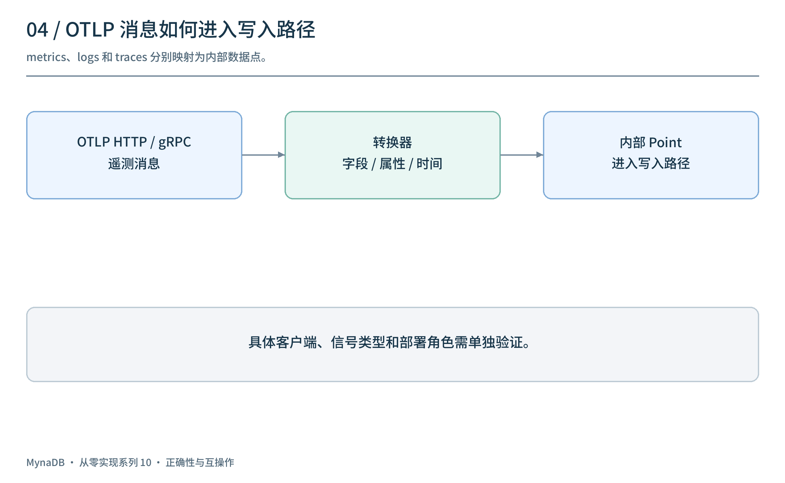
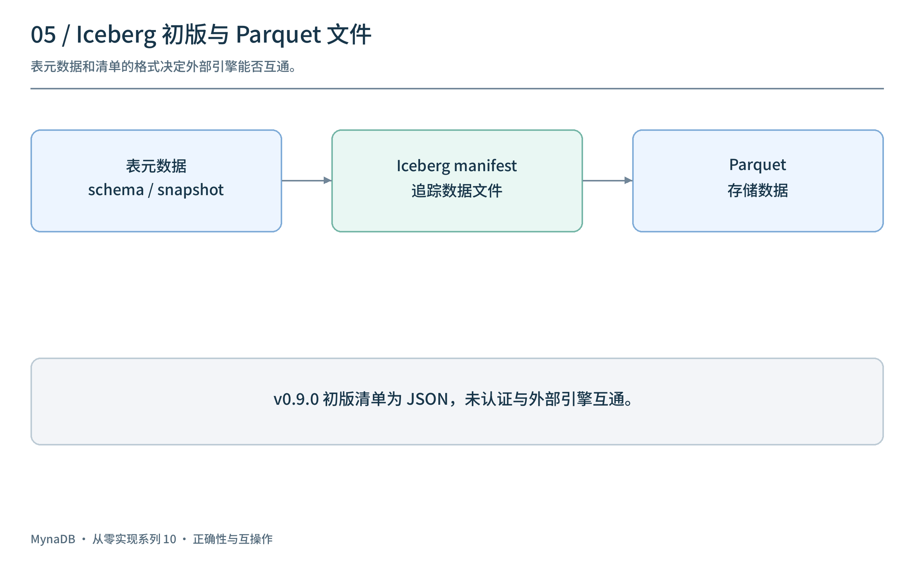
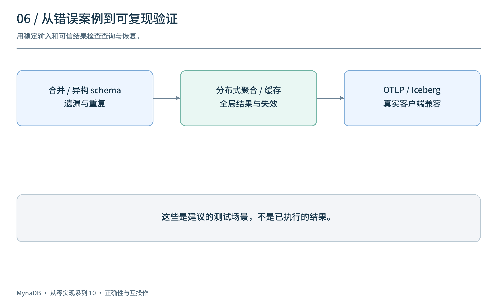

上一篇扩展了管理、协议和分析入口。入口越来越多，系统也更容易暴露原先没有覆盖到的边界：两份文件有重叠怎么办？内存和 Parquet 的列不同怎么办？一个协议的字段映射成功，是否意味着可以和所有客户端互通？
这一篇以 v0.9.0 / M10 为主，补充 v0.9.1 和 v0.9.2 的维护变化。重点不是列举所有功能，而是从具体错误类型理解数据库正确性与互操作性。
1. Compaction 后为什么会重复读到数据？
假设三个旧 Parquet 文件被合并成一个新文件：
旧文件 A、B、C → 合并 → 新文件 D
如果新文件已经写出，但删除旧文件失败，而查询又把目录下所有文件都读入，就会同时读到 A、B、C 和 D。合并动作完成并不等于有效文件集合已经被所有读者正确识别。

v0.9.0 增加了分区级 Compaction manifest，记录被合并结果替代、应从查询中排除的旧文件名；查询发现文件时读取清单并过滤这些文件。目标是即便后续删除旧文件失败，也避免把这些旧文件再次计入。
这份清单与第二篇的教学式 WAL checkpoint 设计不同，也不是完整事务性文件清单：它维护的是 superseded 文件名集合。历史代码在读取清单失败或解析失败时会退回空集合；并发更新、失败窗口和后端语义仍需验证，不能据此断言任何情况下都绝不重复读取。
2. 异构 Schema：同一张表可能有不同列
时序数据随时间变化：新的传感器可能加入字段，旧文件没有它；内存和磁盘中的列顺序也可能不同。

内存：time, host, usage, temperature
文件：time, usage, host
统一：time, host, usage, temperature
结果合并前需要按列名对齐，缺失列补 null，并明确同名不同类型如何处理。还要处理 dictionary 编码、投影列重排，以及 COUNT(*) 等可能不读取普通数据列的查询。
M10 包含内存/Parquet schema 对齐、文件 schema 合并、dictionary 列规范化和投影相关修复。它们针对具体问题，并不证明任何类型演进或客户端查询都已经兼容；必须用包含缺列、重排、冲突和空投影的数据集校验结果。
3. 分布式聚合：局部正确不代表全局正确
多个 Data 节点各自返回部分结果，Router 需要保留原 SQL 的语义。以前面出现过的平均值为例：
节点 A：sum = 100，count = 10
节点 B：sum = 90，count = 1
全局 AVG = (100 + 90) / (10 + 1)
不能对 10 和 90 两个节点均值直接求平均，否则结果错误。分组键、非数值列、时间桶别名和缺失节点的处理同样影响最终结果。

v0.9.0 修复了部分分布式查询及重新聚合问题；v0.9.1 进一步处理 InfluxQL GROUP BY time(...) 的重聚合列名映射，并修正 dashboard 对包装查询响应的处理。该补丁包含针对表达式识别的测试，但不代表所有 offset、fill 和分布式组合均已端到端验证。v0.9.2 的差异则是 README 和前端依赖锁文件维护，没有新增数据库引擎功能。
4. OTLP：协议接入是一条转换链
OpenTelemetry 的 metrics、logs 和 traces 经 OTLP 接入后，需要从协议消息转换为数据库内部的数据点，随后进入写入路径。

OTLP HTTP / gRPC → 解码请求 → 各类信号转换 → 内部 Point → 写入路径
v0.9.0 增加 HTTP/gRPC 服务以及 metrics、logs、traces 转换代码。验证时要分别检查字段、属性、时间单位、信号类型、错误反馈、批次限制和重试；接口存在并不意味着所有 OpenTelemetry SDK、Collector 版本、指标类型或部署角色都已通过兼容测试。该标签的 OTLP 顶层配置默认关闭，使用前应检查对应版本配置。
5. Iceberg 初版：元数据结构不等于完整互通
Iceberg 通过表元数据、快照和清单描述数据文件；外部引擎依赖明确的格式与协议，而不仅仅是底层文件使用 Parquet。

M10 引入 Iceberg 表元数据、快照、REST catalog 和同步相关代码。但历史版本中的 Iceberg manifest 和 manifest list 使用 JSON 序列化，而非完整互操作所需的 Avro manifest 表示。因此不能仅凭这些接口宣称 Spark、Trino 或 Flink 已经兼容。
不要混淆两种 manifest： 前文 Compaction manifest 记录应排除的旧 Parquet 文件；这里的 Iceberg manifest 属于表格式的元数据体系。它们的用途、格式和兼容性要求不同。
Iceberg 功能还需要针对具体表格式版本、字段 ID、分区、快照提交和并发写入做跨引擎验证。该标签的 Iceberg 顶层配置默认关闭。
6. 缓存正确性与测试矩阵
缓存能减少读取，但不能让结果停留在旧状态。M10 修复了热点分区缓存的 schema、失效与陈旧检测等问题，并默认关闭该缓存；启用时仍需评估具体数据变化和并发场景。

| 场景 | 建议核对 |
|---|---|
| Compaction 输出后旧文件删除失败 | 结果是否重复；清单缺失或损坏时如何处理 |
| 内存、文件列缺失或重排 | 字段名、类型、null 和投影结果是否正确 |
| 分布式分桶与聚合 | 与单节点可信结果比较，覆盖别名、空桶和缺失节点 |
| 缓存遇到写入或 compaction | 新版本是否可见，旧结果能否被错误复用 |
| OTLP 各类信号 | 真实客户端版本、字段映射、失败和重试 |
| Iceberg 外部读取 | 格式与 catalog 能否被指定版本的外部引擎读取 |
v0.9.0 加入了一批 HTTP 集成测试和基准资料，但本文没有重新运行这些历史测试。测试文件和性能记录的存在不能单独证明完整兼容、无故障或性能领先。
7. 十个里程碑之后
从第一篇的 HTTP、Arrow 与 Parquet，到 WAL、复制、对象存储、内存查询、集群、节点生命周期、分区路由、运维入口，再到正确性和协议接入，这个系列沿着版本回顾了一个数据库不断扩展的问题空间。
最重要的经验是：数据能写入、结果能返回，只是起点。 还需要定义确认与可见性边界、验证故障和并发、明确兼容范围，并让用户能够判断哪些能力已经经过测试。
这些里程碑是对开发历史的组织方式，不是生产成熟度认证。继续演进时，应以可复现的测试、明确的已知限制和实际用户反馈检验每一步。
项目源码：panbooks/mynadb · v0.9.0 源码 · v0.9.1 · v0.9.2 · 中文文档。